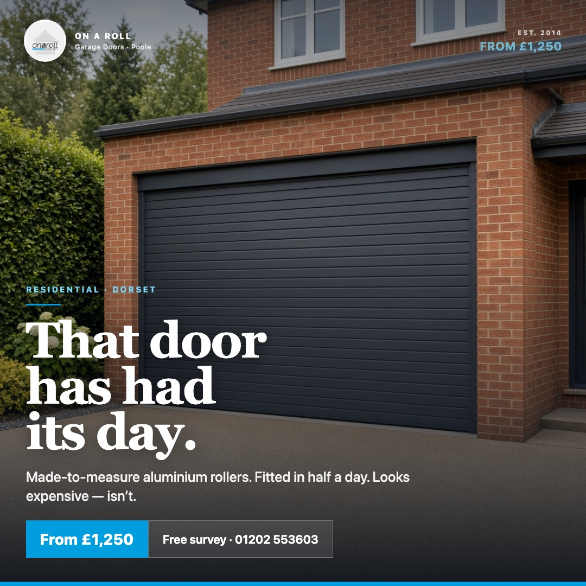
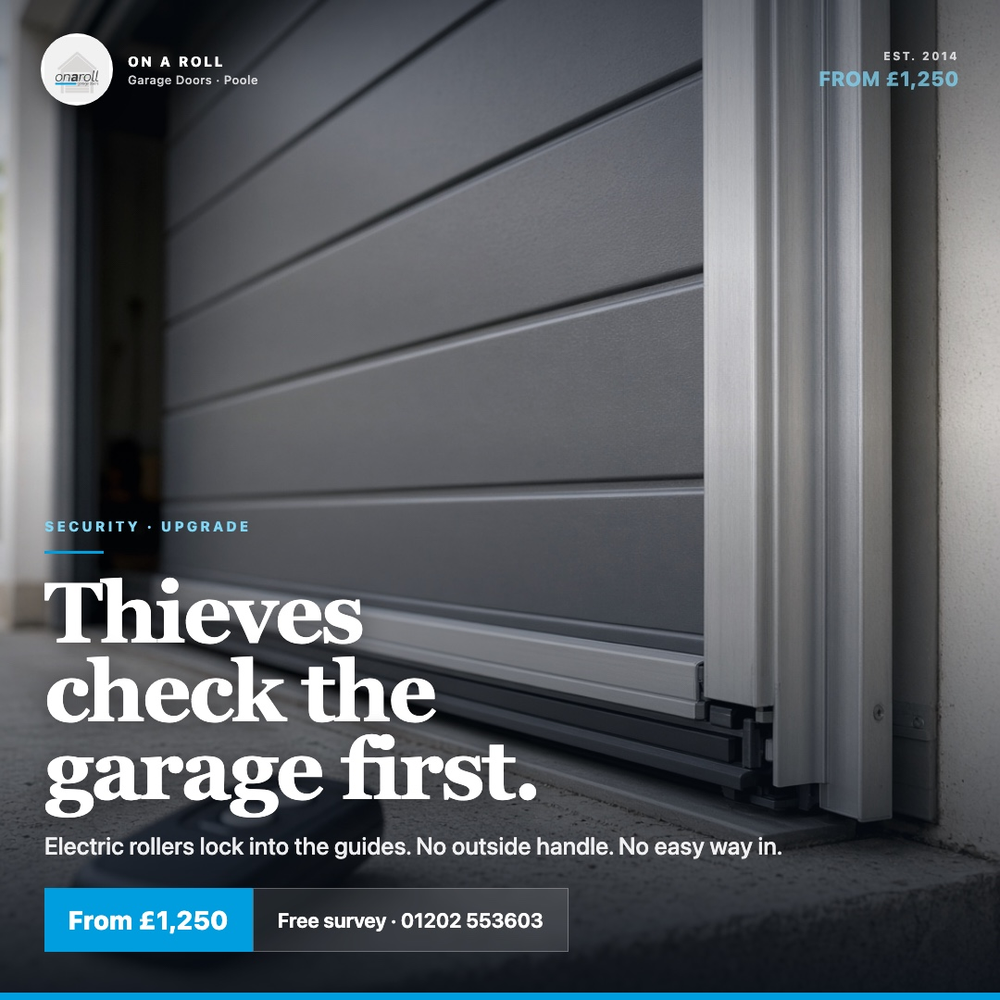
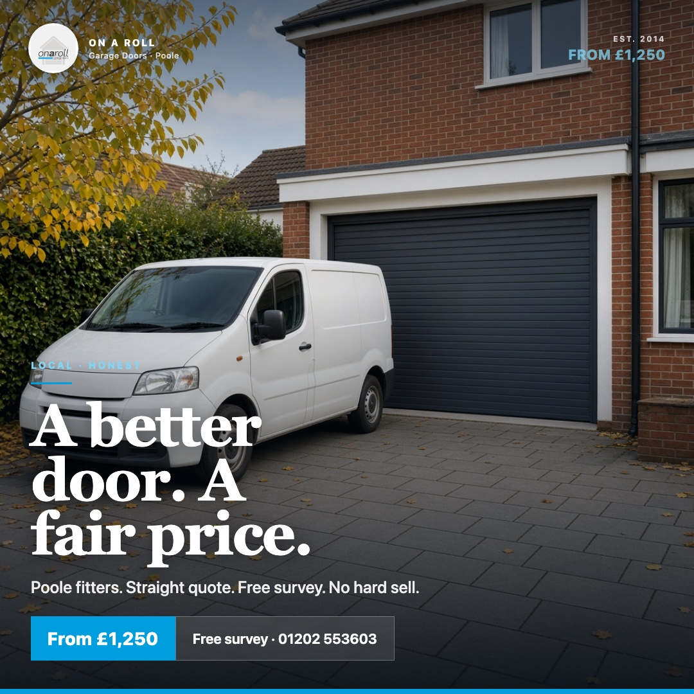
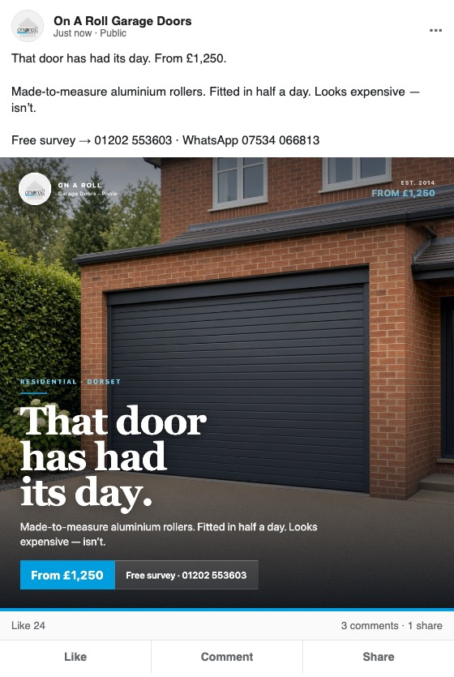
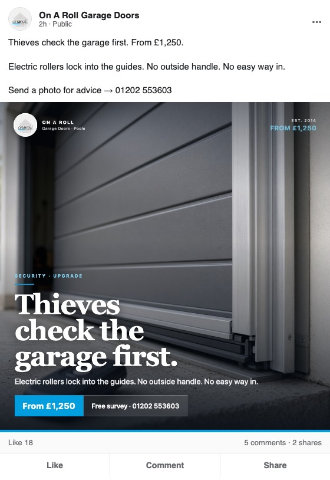
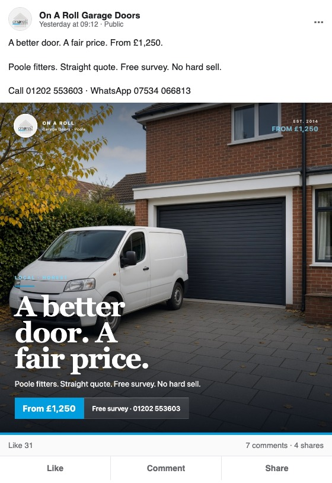

On A Roll Garage Doors
Hi Jon — bold editorial creatives (logo + From £1,250). Section 2 shows how each should look on Facebook. Reply Approve / Edit / Reject.

From £1,250 · Free survey

From £1,250 · Security

From £1,250 · Local / honest

Facebook preview · 001

Facebook preview · 002

Facebook preview · 003